RegionalRubyKaigi レポート (54) 関西 Ruby 会議 06
書いた人：ogom
関西 Ruby 会議 06
はじめに
2015 年 7 月 11 日に開催された関西 Ruby 会議 06 の当日の様子をレポートしたものです。

開催概要
- 開催日
- 2015 年 7 月 11 日 (土)
- 開催会場
- エムオーテックス新大阪ビル エムオーテックスホール
- 参加者数
- 190 名
- ハッシュタグ
- #kanrk06
- 主催
- Ruby 関西
- テーマ
- Enjoy Programming
- 公式サイト
- http://regional.rubykaigi.org/kansai06/
- まとめ
- スライドまとめ
オープニング
参加者が 230 名も登録されていましたが、手慣れたメンバーと当日スタッフの連携でスムーズに受付ができました。
会場は大通りから少し中に入った所なので、当日スタッフが道案内をしてくれたのもよかったです。
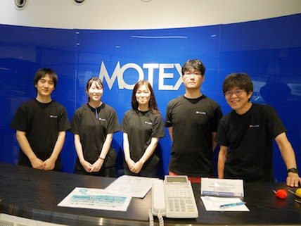
スタッフは朝の 8 時 30 分には集合をしていましたが、参加者も 9 時頃には集まり始めていました。
Doorkeeper で募集をしていたので、みなさん「アプリでチェックイン」の準備して並んでいます。

基調講演、講演、LT を含めると発表者は 17 名でした。その発表者の司会を務めた 3 名です。
マイクランナーも傾斜のある階段を俊敏に駆け回っていました。

Ruby にみるプログラミングスタイルの進化
基調講演: まつもと ゆきひろ さん
タイトルはプログラミングスタイルの進化ですが、_まつもと ゆきひろさん_の進化も拝見することができました。
今では聞く事のない言葉もいくつか紹介されていました。
当時はコンピュータが高価だったので、コンパイラの気持ちになってノートに書いて勉強した。(無いコン族)
「私が言語を設計してはいかんのか？」となり、想像上の「ぼくの考えた最強の言語」が生まれる。(ペーパープロトタイピング)
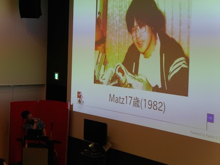
社内のアプリケーションを作成していたが、会社の方針転換で保守の要員となった。
しかし、そこがプログラミング言語の Ruby が生まれるきっかけになったそうです。

ウェブアプリケーションの全盛で Ruby が広く使われ始めた。(作者としては不本意)
DSL (抽象化を一段上げる) や、メタプロも活用の貢献も大きい。
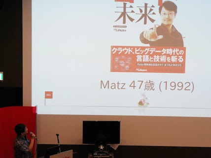
プログラミングスタイルの進化にバージョン管理ツールの進化が影響をあたえた。
(昔々はフロッピーディスクに tar でファイルをまとめて世代管理をされていた逸話がありました。)
- RCS (ロック・アンド・モディファイ)…… 職場が荒れた。
- CVS (エディット・アンド・マージ)…… 職場に平和が戻る。
- svn (アトミック・コミット)…… ネットワークが必要。
- git (分散バージョン管理)…… ネットワークが不必要。
そして、GitHub の登場でオープンソースがしてきた開発の手法を会社の社内の開発でもするようになった。 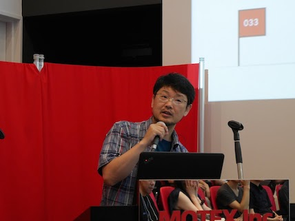
質問タイムでは、「島根は好きです！」と即答していました。(前日の前夜祭でなにかあったらしい？ )
また、_まつもと ゆきひろ さん_は C 言語のプラグラマーなので、「Ruby 会議はアウェー感」の回答に会場が賑わいました。

スポンサー LT
スポンサーの特別枠で 5 人の LT がありました。
Ruby ビジネスフォーラムではスーツ率が高いそうです。

こちらは_関西 Ruby 会議 06_ の集合写真です。(圧倒的な私服率の高さでした。)
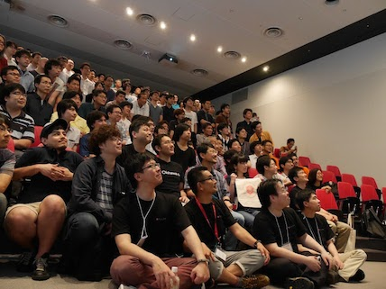
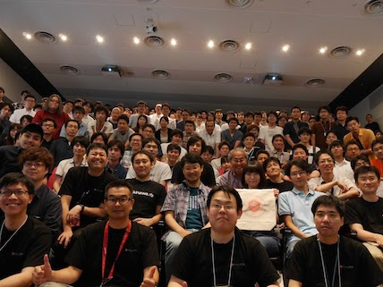

Rails ガイドを支える技術
講演: @yasulab さん
Rails ガイドを継続的に更新していく技術をデモンストレーションを交えて紹介されていました。
プロの翻訳者の八田さんがパワフルに翻訳を進めて行かれるそうです。

「Rails ガイド電子版を今日に出版するために、前夜祭の参加を諦めました。」
「夜中の 3 時までコミットしていました。」…… 会場からの大きな拍手！ ( 88888888 )

200 万 Web サイトを支える ロリポップ！ と mruby
講演: @harasou5 さん
mruby と mod_mruby で大量のアクセスに対応することができます。 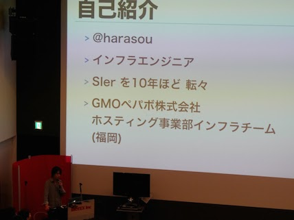
mod_mruby の紹介で、ヒゲの松本さんの紹介に会場は「？？？」の空気になりました。
(スライドの_まつもと ゆきひろ さん_と_松本 亮介さん_にはどちらもヒゲがあります。)
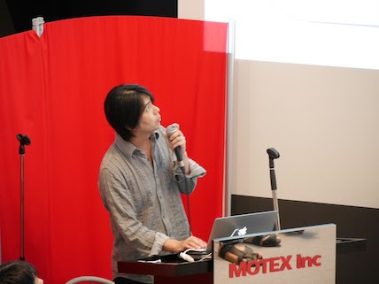
スモウルビー 1.0：小学 3 年生から始める Ruby プログラミング
講演: @takaokouji さん
スモウルビーは Scratch のように子供でも簡単にプログラミングを楽しめます。
野球のリトルリーグのようなプログラミング少年団を目指して活動をされています。
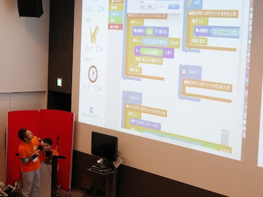
スモウルビーで「ねずみとねこの追いかけっこゲーム」のライブコーディングがありました。
限られた時間でゲームを作り、そのゲームもライブでクリアするパフォーマンスで盛り上がりました。
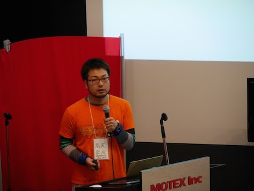
RSpec、Minitest、使うならどっち？
講演: 伊藤 淳一 さん
Qiita で Ruby の部、Rails の部、RSpec の部は全て 1 位のストックを獲得されています。
xUnit 形式 vs Spec 形式 や RSpec vs Minitest をとても丁寧に解説されていました。

伊藤 淳一 さん_は主観的に選ぶなら _RSpec だそうです。
「Minitest は DIYer 気質が強い方に好まれる。」という分析 (仮説)

Rails パフォーマンス基本のキ
講演: @joker1007 さん
社内の Qiita では圧倒的な 1 位でストックを獲得されています。
パフォーマンスが悪くなる要因を例を見ながらの解説でした。(特に serialize は気を付けて使うべし！ )

検知と計測のためのツールの紹介の中には @joker1007 さん が作った Activerecord::Cause という Gem もありました。
「最も大事なことは、壊れた窓を放置しない」の言葉は身に突き刺さりました。
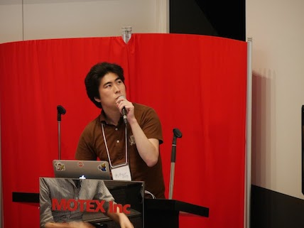
API server/client development using JSON Schema
講演: @izumin5210 さん
「Kobe.rb と Asakusa.rb から来ました。」これが一番言いたかったようです。
JSON Schema は YAML で記述できます。(JSON は {} と "” の入力で shift キーが死ぬんじゃないか！？ )

「テスト支援ツールとしての JSON Schema がイケてる使い方です。」
SOAP おじさんからの まさかり がくるそうですが、きちんと議論をしたいそうです。
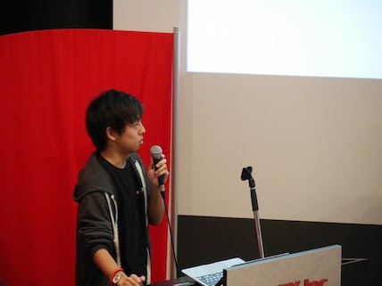
LT 大会
サーバサイドなおじさんが SPA を趣味で初めて作ってみたときにわかった n のこと (仮)
LT: @muryoimpl さん

受託開発と RubyGems
LT: @koic さん

派遣エンジニアが業務に Ruby を取り入れるまで
LT: @hayabusa333 さん

インフラの人が Chef や Serverspec (ほか) が Ruby だったおかげですこしプログラムをするようになった
LT: @sawanoboly さん

ActiveAdmin Better Practices
LT: @ShinsukeKuroki さん

キーワードパラメータを支える技術
基調講演: 笹田 耕一 さん
キーワードパラメータは Ruby 2.2 で速くなりました。
(会場では使っている人は少なかったですが、速くなったのでどんどん使いましょう。)
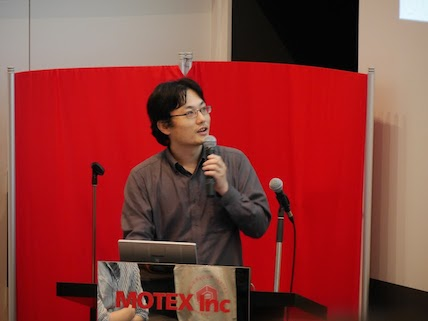
シンボル GC の改善が Ruby 2.2.2 で対応してると思っていたら、その修正が入っていなかった。
「Ruby 2.2.3 ではなおっているかも？ 」
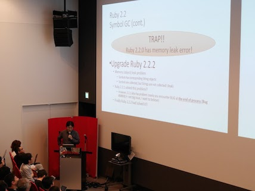
Ruby 2.2 からの インクリメンタル GC で大幅に改善がされています。
(グラフのピンと跳ね上がるポイントを押さえる事ができています。)

笹田 耕一 さん_をイベントに招待すると _Ruby のクオリティーが上がるそうです。(スライドのネタ作りため！)
それと、_笹田 耕一 さん_も C 言語のプラグラマーなので、Ruby 会議はアウェー感！？

参加者は朝からのたくさんの発表を真剣に聞き入っていました。
また、質問タイムには積極的に手を挙げて会場を盛り上げて頂きました。

クロージング
大勢の参加者や発表者、スタッフ・スポンサーのおかげで関西では最大級の Ruby のイベントは大成功に終わりました。
アフターパーティーも 70 名の参加者で賑わいました。(席に座らずあちこちで立ち話で盛り上がるほどでした。)
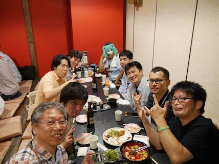
 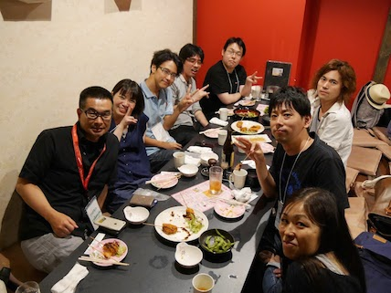
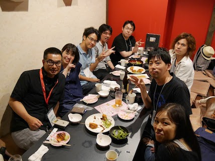
ノベルティ
関西 Ruby 会議 06 のノベルティーです。T シャツとバック、ステッカーの 3 種です。
(ステッカーは前夜祭と懇親会でのみ配られたレアアイテムです。)

るびま 担当
レポート: 尾篭 盛 (ogom)
写真提供: 田又 利土 (rito)